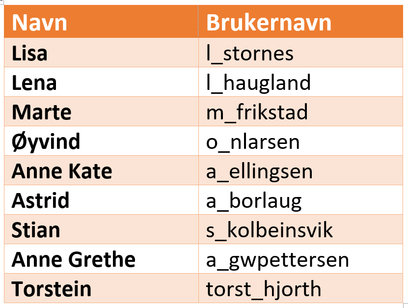

Logg på (Sign in) med brukernavn (se tabell nedenfor) og passord som jeg har send til alle elever individuelt
Open første activity: BLOCKS1 (Activities (aktiviteter), Workbook (arbeidsbok))
Hvordan? se på video nedenfor eller spør lærer
Dette gjelder bare når du har fått brukernavn / psswd!
Tabell med navn og brukernavn til deltakere:

Første programmeringstime med Sphero BOLT (3.oktober 2019, 1 STA):
Eksempel programmert Sphero BOLT:
Oppgave: Fra startsted, gå fram over "hoppbakke", snu til venstre, gå litt, snu til venstre, gå helt tilbake,
snu til venstre, gå tilbake til startsted, gå fram over "hoppbakke". Resultat, se på video nedenfor!